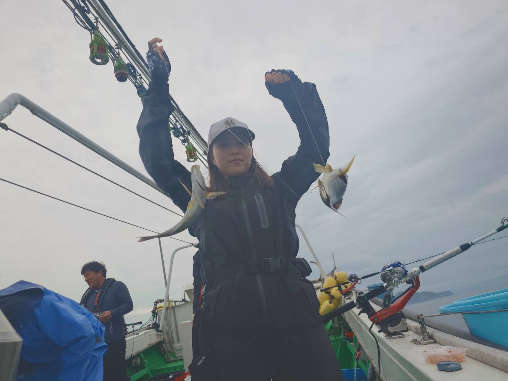
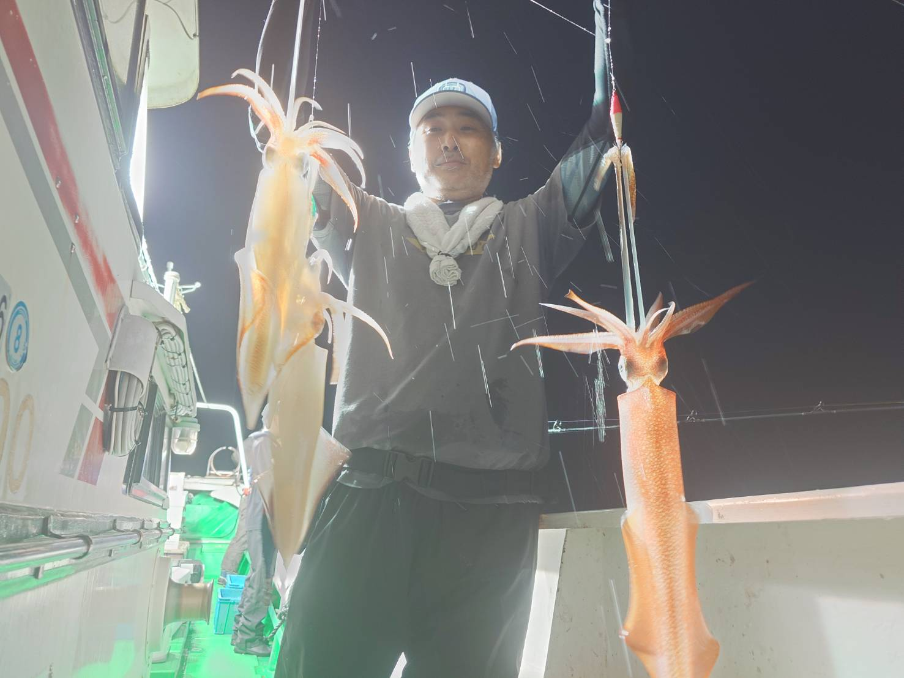
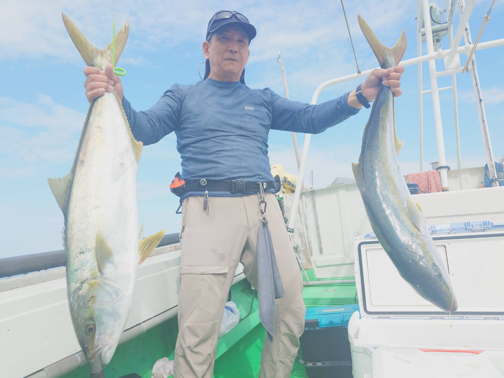
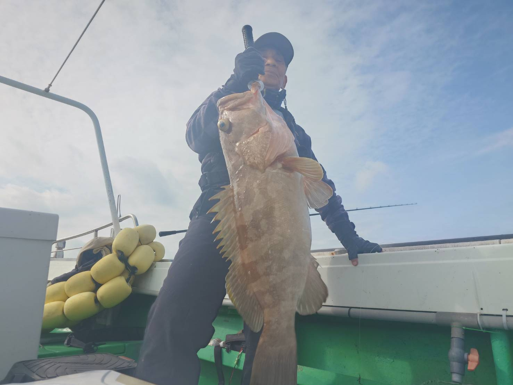
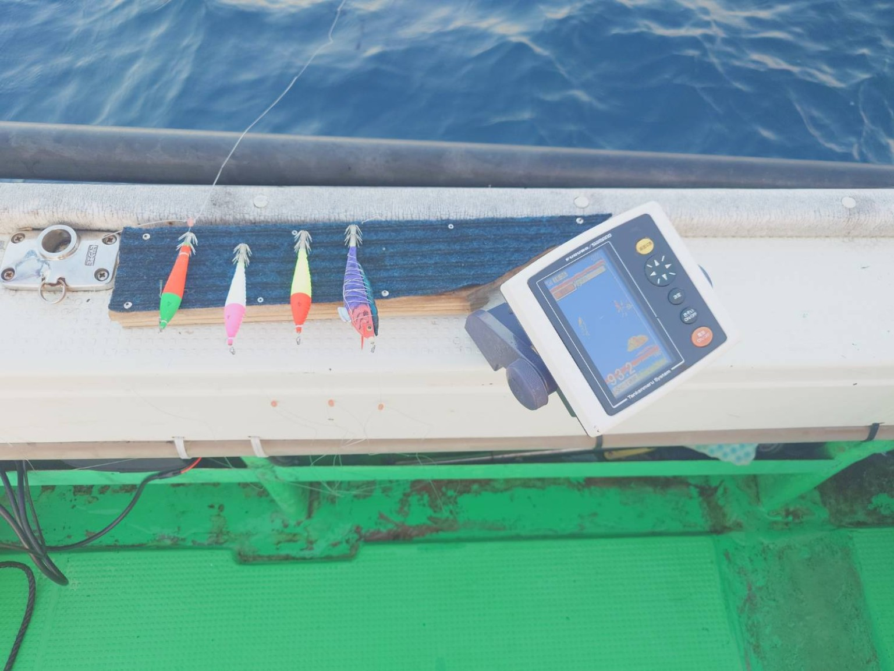
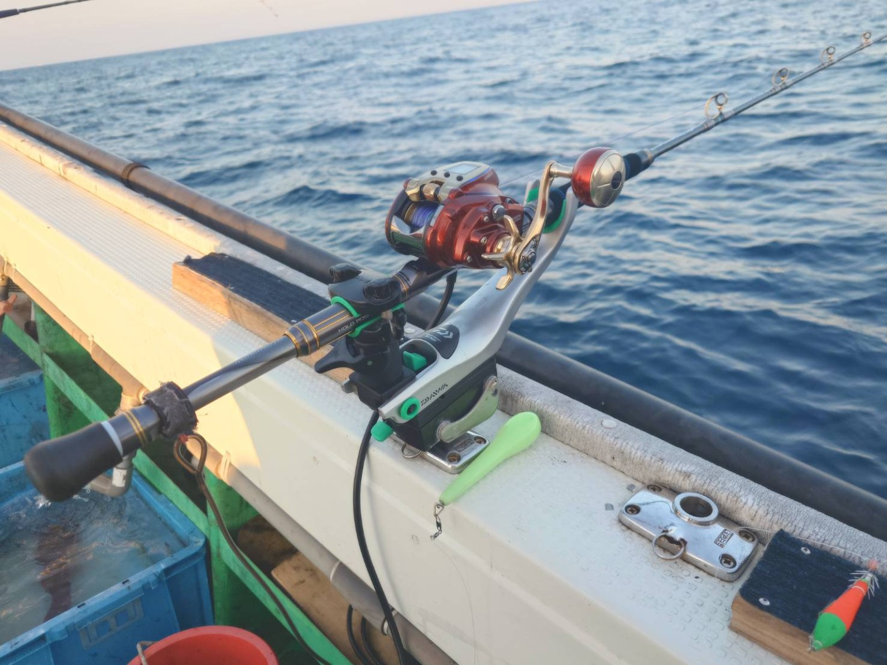
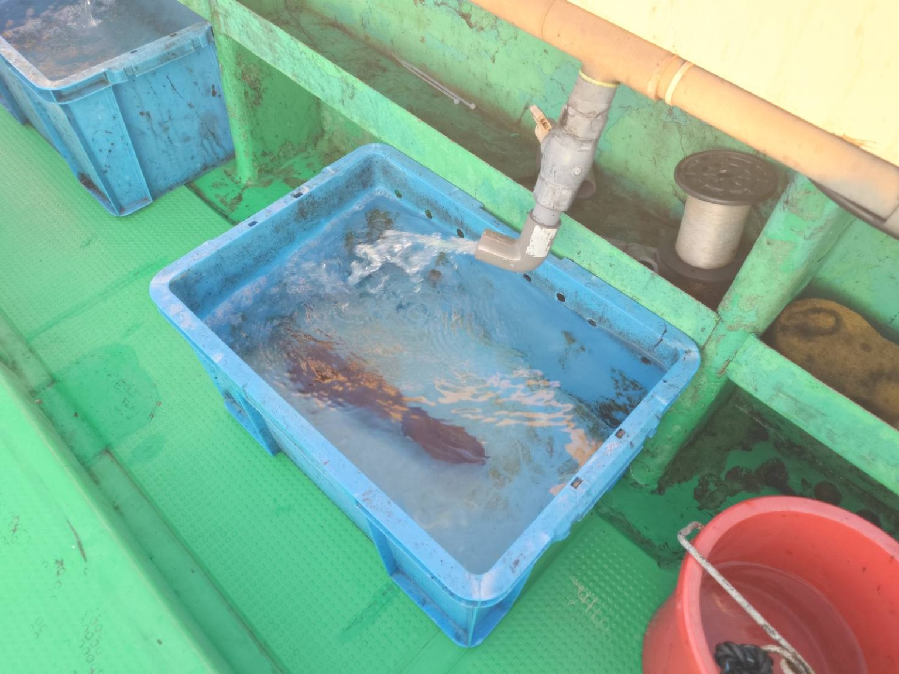

SPRING
春
イサキ・ケンサキイカ
春はイサキ釣りや ケンサキイカ（ヤリイカ）を楽しめます。
FISHING
季節ごとに変わる
呼子の海の釣りを楽しむ。
SEASON
吉栄丸では、その季節に楽しめる 釣り物へご案内しています。

イサキ・ケンサキイカ
春はイサキ釣りや ケンサキイカ（ヤリイカ）を楽しめます。

ケンサキイカ
夏の人気釣り物。 夜焚きイカを楽しめる季節です。

ヒラマサ・ブリ
秋は青物を狙う釣りが 楽しめます。

根魚
アコウ・ヒラメ・ボッコ・アラなど、 根魚を狙います。
POPULAR
吉栄丸おすすめの釣り。 夜の海でイカ釣りを楽しめます。
小アジを使って魚を狙う、 人気の釣りです。
ON BOARD
釣りを楽しんでいただくための 船上設備をご紹介します。

船上で魚探を確認しながら 釣りを楽しめます。

竿を置いておける ロッドホルダーを備えています。

釣った魚を船上で 活かしておけます。
FISHING TYPES
夏を中心に楽しめる人気の釣り。
春に楽しめる釣り物です。
小アジを使って魚を狙います。
秋のヒラマサやブリなどを狙います。
SCHEDULE
最新の出船予定をご確認ください。
出船予定を見る →